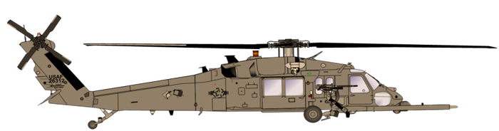
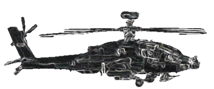
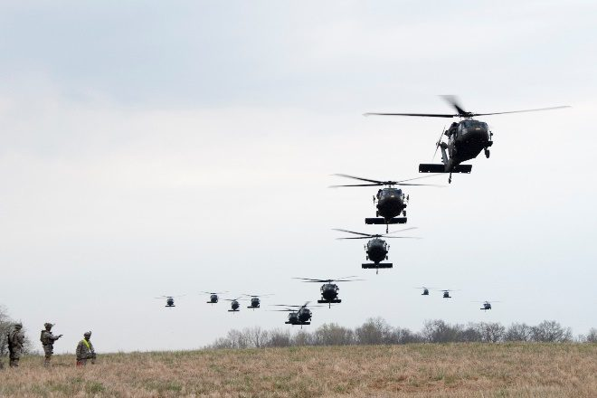
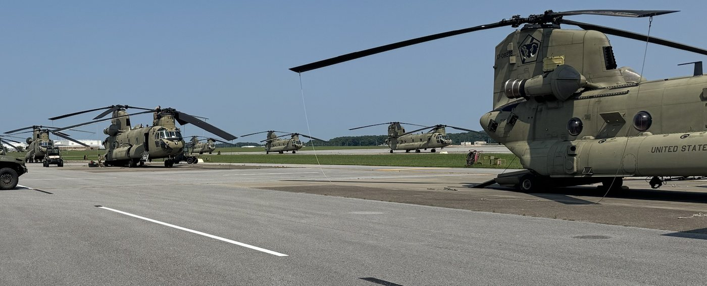
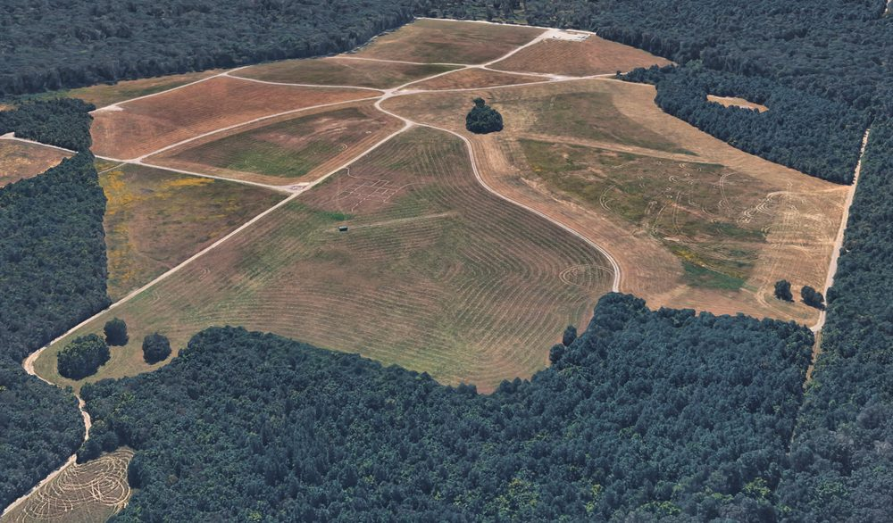
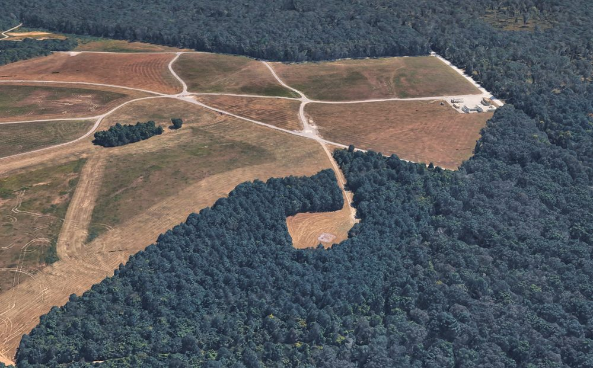
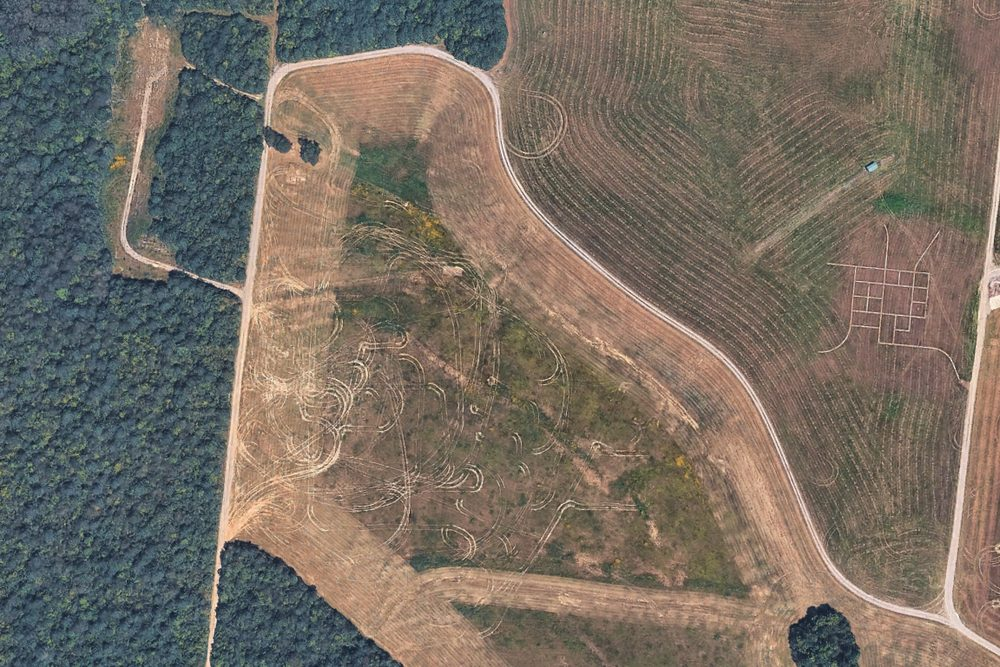
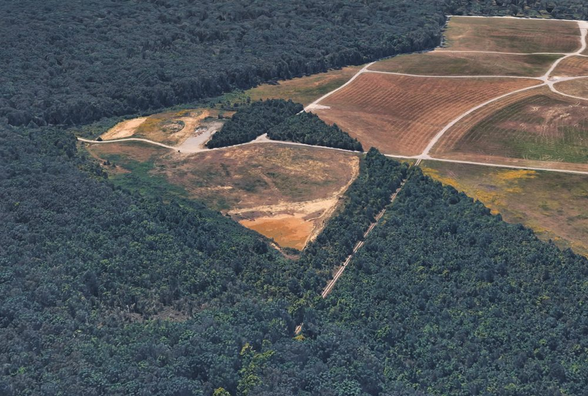

Air assault seizure of a jump forward arming and refueling point to extend combat aviation reach into the Division deep area.
Attack aviation combat radius is bounded by fuel load. Ordnance, required reserve and time on station all draw on the same tank. When the Division deep target sits beyond that radius, the deep attack cannot be executed from the intermediate staging base.
Bingo fuel. The attack element reaches bingo short of the objective and must return to base. Terrain beyond that line remains unshaped until fuel is positioned forward.
FM 3-04 and ATP 3-04.17 define the FARP by that purpose. Positioning Class III and Class V forward reduces turnaround distance and extends the time an aircraft can remain in the fight. Four variants are described, each trading permanence for responsiveness.
Equipment emplaced, crews in position, refueling in progress. The standard FARP supporting sustained operations.
Emplaced and concealed. Activated only when aircraft are inbound, to limit signature until required.
Rapidly displaceable, with Class III and Class V delivered on the supporting aircraft. Established to support a single deep operation, then displaced or closed.
Moves by bounds behind the maneuvering unit to keep aviation support within reach of the advance.
The Division deep area is the terrain beyond the close fight, where aviation shapes enemy forces before the main effort arrives. Reaching it is a sustainment problem before it is a tactical one.
For the 101st, the J-FARP is the enabler for the large-scale, long-range air assault. The deep attack sets conditions on the follow-on objective. The J-FARP sets conditions for the deep attack.
Mission. On order, an Infantry Company (-) conducts Air Assault Operations to seize a J-FARP to enable Combat Aviation Assets to mass combat power in the Division Deep Area to defeat enemy forces and seize key terrain.
2x CH47 · 2x UH60 · C2 (NOMAD) · 82 PAX. GTF air assault. FARP seizure. Pathfinder operations.

2x CH47 · FATCOW · WETCOW · 18 PAX (ECHO / 6-101 FARP crew). FARP TF air assault. FARP establishment.
2x AH64. Deep attack air assault. Refuel and rearm at the J-FARP, continue to the DIV deep TGT (100–150 NM).

Interdict enemy forces along the avenues of approach leading to the FARP site. Occupies the objectives that form the perimeter around the site.
Seize the FARP site. Clears the site and reports it secured NLT H+1:00.
Secure the FARP site. Local security on the aircraft and refuel points for the duration of FARP operations.

Airborne and air assault doctrine develops five plans in reverse sequence. Each constrains the next. For a FARP seizure, the ground tactical plan is governed by a requirement most air assaults do not carry: the site must accept a CH-47 with internal fuel aboard.
Assembly, sequencing and PZ posture.
Chalk and load assignments by aircraft.
Routes, timing and formation.
Zone, heading and landing sequence.
Actions on the objective.

Initial planning conference, air mission coordination meeting and air mission brief. The aviation task force and the ground task force produce a single integrated plan.
Select, mark and control landing and pickup zones, provide terminal guidance to inbound aircraft and conduct PZ operations for extraction.
Cold-load training on the supporting airframes, leader certification and deliberate rehearsals mitigate the risk of operating 180 NM from the ISB.
Key Tasks: Air Assault Planning · FARP Site Selection
Key Tasks: GTF Air Assault (Lift 1) · FARP Seizure · Pathfinder Operations
Key Tasks: FARP TF Air Assault (Lift 2) · FARP Establishment · Deep Attack Air Assault (Lift 3)
Key Tasks: FARP Defense
The CONOP designates four phases by the force's primary task. The Storm Surge timeline supplies the clock: approximately two and one half hours of flight, one hour to seize, one hour of FARP operations, one hour to extract. FARP defense is not a discrete block of time. It begins at first wheels down and ends at last wheels up.
That compression is deliberate. A FARP is a high-signature, predictable target. The concept limits exposure by keeping the window short. The phases that follow address how each hour is executed.
Key tasks: air assault planning and FARP site selection. The site must satisfy three requirements concurrently.



Key tasks: GTF air assault (Lift 1), FARP seizure, pathfinder operations. Night air assault, dismounted land navigation, seize.
Chalk-to-LZ assignments shown are the Storm Surge AMB plan (3 aircraft). The CONOP Lift 1 package is 2x CH47 / 2x UH60. Control measures are drawn over the unit's overhead imagery.
Key tasks: FARP TF air assault (Lift 2), FARP establishment, deep attack air assault (Lift 3). Pathfinders control the zone.
Key task: FARP Defense. ATP 3-04.17 treats the FARP as a high-value, high-signature target. The aviation unit brings minimal organic security; the ground task force provides it. The posture follows the principles of the defense applied at company scale.
PACE. Primary Wickr over TACSAT-IW. Alternate TAK / ICE. Contingency Signal over MUOS. Emergency cell or HF.
Displacement criteria. Site compromised, or the alternate site better positioned for the next turn. The FARP moves before it is forced to.
TC 3-21.76, para 7-46: a patrol base is a security perimeter set up when a squad or platoon conducting a patrol halts for an extended period. Not occupied more than 24 hours except in an emergency. Never the same site twice. Figure 7-7 gives the shape.
The objectives are the apexes of a patrol base drawn at company scale around PZ Cedar. The Storm Surge AMB is one occupation of it. The geometry is TC 3-21.76 Figure 7-7.
Blue wedges are the machine guns, each firing across the front of the squad to its left. Left: the objectives. Right: the patrol base as drawn in TC 3-21.76 Figure 7-7, apex at 6 o'clock.
Storm Surge Phase 5, reconsolidation, distinguishes a jump FARP from a base. The fuel point exists for one turn of the attack element and is then closed.
A company (-) with limited sustainment 180 nautical miles from FCKY. Casualty evacuation and resupply are aviation tasks that must be planned, not assumed.
Rotors turning, fuel flowing, aircraft on the ground on a schedule. The window is the vulnerability. The concept mitigates with objective security and a compressed timeline.
The company assumes risk by training with newly qualified pathfinders, because a Division pathfinder company is the intended recipient of this mission set.
1× DOS of CL I issued prior to W/U and 1× DOS carried per soldier on the aircraft.
Air assault planning with 6-101 CAB, cold-load training on the supporting airframes, and leader certification prior to execution.
Validate the task force on a training objective at full distance before the concept is relied upon for a deep attack.
Mission. Dog Company conducts a Company (-) Air Assault into Tullahoma, TN to secure an expeditionary FARP on 29 0130Z OCT 26 to enable freedom of movement for 6-101 CAB and proof the concept for FARP seizure operations.

Seize the site. Establish the FARP. Turn the deep attack. Close the site. An infantry company (-), three hours on the ground, extends the Division's deep fight by 200 nautical miles.
Doctrinal framing draws on FM 3-04 Army Aviation, ATP 3-04.17 Techniques for Forward Arming and Refueling Points, FM 3-99 Airborne and Air Assault Operations, FM 3-90 Tactics, ATP 3-21.8 Infantry Platoon and Squad and TC 3-21.76 Ranger Handbook (patrol base definition, site selection, planning considerations and Figure 7-7 quoted from para 7-46). Other doctrinal statements are paraphrased and should be verified against current editions.
Mission, intent, task organization, lift packages, phasing, timeline, deliverables, aerial imagery and apron photographs are from the Dog Company J-FARP Seizure CONOP and the Operation Storm Surge AMCM / AMB of 06 OCT 26.
The CH-47, UH-60, AH-64 and dismounted soldier are the supplied models. The wide-area terrain is built from two illustrative terrain-board renders and is not real geography. Lift packages, phasing and key tasks are quoted from the CONOP as briefed; the Ground Task Force elements and strengths are as directed by the GTF commander; chalk-to-LZ and objective assignments follow the Storm Surge AMB; OP and mortar positions are illustrative.